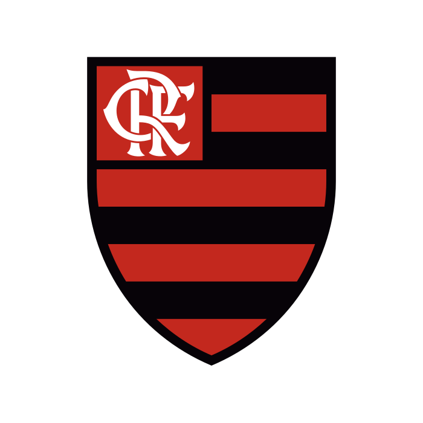

O Clube de Regatas do Flamengo foi fundado em 17 de novembro de 1895, na praia do Flamengo, Rio de Janeiro, inicialmente como um clube de remo. O futebol oficializou-se em 1912, após dissidência no Fluminense. O futebol oficializou-se em 1912, após dissidência no Fluminense. Tornou-se um gigante mundial com ídolos como Zico, Maestro Júnior e muitos outros conquistando títulos como Mundial (1981), Libertadores (1981, 2019, 2022, 2025) e múltiplos campeonatos Brasileiros, incluindo o polêmico título de 1987.

Principais Marcos da História Rubro-Negra:
- Fundação (1895): Criado por remadores na noite de 17 de novembro de 1895.
- Entrada no Futebol (1912): Alberto Borgerth e outros jogadores insatisfeitos com o Fluminense migraram para o Flamengo, formando o primeiro time.
- A "Papagaio de Vintém" e Mudança de Cores: A primeira camisa foi a "papagaio de vintém", substituída em 1916 pelo padrão rubro-negro atual, após um período usando cobra-coral.
- A Era Zico (Anos 70/80): Com Zico, Nunes, Júnior e outros, o Flamengo viveu seu auge, vencendo a Libertadores e o Mundial em 1981, além de múltiplos Campeonatos Brasileiros.
- A Era Moderna e Títulos Recentes: Após anos difíceis, o clube se reestruturou e conquistou títulos importantes recentes, incluindo as Libertadores de 2019 e 2022, reafirmando-se como potência sul-americana.
Títulos de Destaque:
- Mundial/Intercontinental: 1981.
- Campeonato Brasileiro: 9 títulos (1980, 1982, 1983, 1987, 1992, 2009, 2019, 2020, 2025).
- Copa do Brasil: 1990, 2006, 2013, 2022, 2024.
- Campeonato Carioca: Maior vencedor, com 39 títulos.
O Flamengo é conhecido por ter a maior torcida do Brasil, a "Nação Rubro-Negra", e por sua trajetória marcada por raça e emoção.